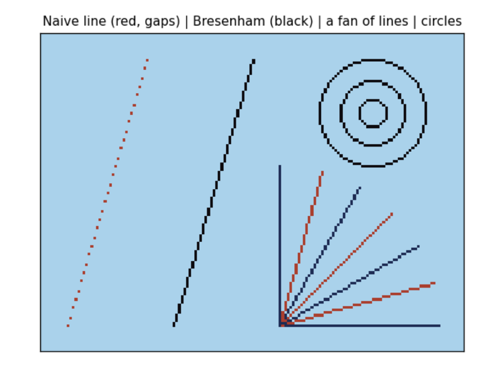
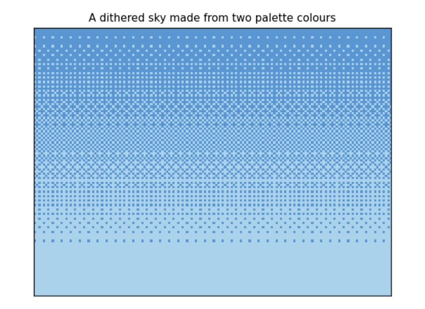
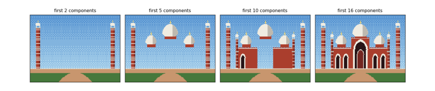

2. Still pictures¶
A still picture comes first: an animation is only many stills. This chapter goes from one pixel to the whole front of the mosque, and each step adds one idea.
2.1 A picture is a grid of numbers¶
A screen is a grid of small squares called pixels. Our canvas is 160 pixels wide and 120 high, about the size of a 1980s home computer screen. Position is given by a column x (0 at the left) and a row y (0 at the top: on screens y grows downwards, the opposite of a graph in maths).
Old machines did not store a colour for each pixel. They stored a small number, an index into a palette of 16 colours, so a pixel needed half a byte instead of three. We do the same: the canvas holds numbers 0 to 15, and the palette turns each into red, green and blue amounts (0 to 255 each). Changing one palette entry recolours every pixel that uses it at once, a trick we use later for night.
W, H = 160, 120
GROUND = 104
PALETTE = [
(16, 20, 43), (29, 43, 83), (94, 58, 110), (90, 150, 210), # 0 night, 1 deep blue, 2 dusk, 3 day sky
(170, 210, 235), (240, 140, 60), (255, 220, 110), (240, 236, 225), # 4 pale sky, 5 orange, 6 sun, 7 marble
(190, 185, 175), (170, 62, 45), (115, 38, 32), (40, 20, 22), # 8 marble shade, 9 sandstone, 10 its shade, 11 door
(70, 120, 60), (40, 75, 40), (200, 150, 110), (12, 10, 14), # 12 lawn, 13 lawn shade, 14 path, 15 black
]
RGB = np.array(PALETTE, dtype=np.uint8)
def new_canvas(colour=0):
return np.full((H, W), colour, dtype=np.uint8)
def put_pixel(c, x, y, col):
"""Set one pixel, ignoring positions off the canvas (a 'clipped' write)."""
if 0 <= x < W and 0 <= y < H:
c[int(y), int(x)] = col
def show(c, title=None, ax=None):
ax = ax or plt.figure(figsize=(6, 4.5)).gca()
ax.imshow(RGB[c], interpolation="nearest") # RGB[c] looks every index up in the palette at once
ax.set_xticks([]); ax.set_yticks([])
if title:
ax.set_title(title, fontsize=10)
c = new_canvas(3)
for x in range(W):
put_pixel(c, x, 60, 15) # a horizontal row of black pixels at y = 60
for y in range(H):
put_pixel(c, 80, y, 9) # a vertical column of red pixels at x = 80
put_pixel(c, 10, 10, 6)
fig, axes = plt.subplots(1, 2, figsize=(9, 3.6))
show(c, "Canvas, 160 x 120 palette indices", axes[0])
axes[1].imshow(RGB[np.arange(16).reshape(2, 8)], interpolation="nearest")
for i in range(16):
axes[1].text(i % 8, i // 8, str(i), ha="center", va="center", fontsize=9, color="white" if i in (0, 1, 2, 10, 11, 13, 15) else "black")
axes[1].set_xticks([]); axes[1].set_yticks([]); axes[1].set_title("The 16-colour palette", fontsize=10)
plt.tight_layout(); plt.show()
print("canvas shape (rows, columns):", c.shape, " bytes:", c.nbytes, " value at row 60, column 5:", c[60, 5])

canvas shape (rows, columns): (120, 160) bytes: 19200 value at row 60, column 5: 15
The left panel is the canvas: one black row, one red column and a single yellow pixel near the top left, at x = 10, y = 10. The right panel shows the palette with each index printed on its colour. The printout confirms that the whole picture is 19,200 bytes (one byte per pixel; a real 8-bit machine would pack two pixels per byte) and that the pixel at row 60, column 5 holds 15, the index of black. Note that numpy indexes row first: c``[``y, x``].
2.2 Lines and circles from scratch¶
A line from (x0, y0) to (x1, y1) must be drawn as a staircase of whole pixels. The obvious way, computing y = y0 + slope × (x − x0) for each x, leaves gaps when the line is steep and needs fractions. Bresenham's algorithm (1965) uses only whole numbers: it walks one pixel at a time and keeps a running error, how far the true line has drifted from the pixel centre, and steps sideways whenever the error passes half a pixel. This is what line() in the old graphics.h library and every early games machine did.
A circle uses the same idea. The midpoint circle algorithm works out one eighth of the circle and copies each point to the other seven by symmetry: if (x, y) is on a circle about the centre, so are (y, x), (−x, y) and so on.
def line(c, x0, y0, x1, y1, col):
x0, y0, x1, y1 = int(round(x0)), int(round(y0)), int(round(x1)), int(round(y1))
dx, dy = abs(x1 - x0), -abs(y1 - y0)
sx, sy = (1 if x0 < x1 else -1), (1 if y0 < y1 else -1)
err = dx + dy # error term, scaled to stay a whole number
while True:
put_pixel(c, x0, y0, col)
if x0 == x1 and y0 == y1:
return
e2 = 2 * err
if e2 >= dy: # the line has moved far enough to step in x
err += dy; x0 += sx
if e2 <= dx: # and/or in y
err += dx; y0 += sy
def circle(c, cx, cy, r, col):
x, y, err = r, 0, 1 - r
while x >= y:
for px, py in ((x, y), (y, x), (-y, x), (-x, y), (-x, -y), (-y, -x), (y, -x), (x, -y)):
put_pixel(c, cx + px, cy + py, col)
y += 1
if err < 0:
err += 2 * y + 1 # midpoint inside the circle: keep x
else:
x -= 1; err += 2 * (y - x) + 1 # outside: step x inwards
def naive_line(c, x0, y0, x1, y1, col):
for x in range(x0, x1 + 1):
put_pixel(c, x, round(y0 + (y1 - y0) / (x1 - x0) * (x - x0)), col)
c = new_canvas(4)
naive_line(c, 10, 110, 40, 10, 9) # steep: gaps appear
line(c, 50, 110, 80, 10, 15) # Bresenham: unbroken
for i, a in enumerate(np.linspace(0, math.pi / 2, 7)):
line(c, 90, 110, 90 + 60 * math.cos(a), 110 - 60 * math.sin(a), 1 + i % 2 * 8)
for r in (5, 12, 20):
circle(c, 125, 30, r, 15)
show(c, "Naive line (red, gaps) | Bresenham (black) | a fan of lines | circles")
plt.show()
lit = int((c == 9).sum())
print("pixels lit by the naive steep line:", (c[:, :45] == 9).sum(), "for a rise of 100 rows")

pixels lit by the naive steep line: 31 for a rise of 100 rows
The red line on the left was drawn the naive way. It is steep (100 rows for 30 columns), and the loop visits each column once, so it lights only 31 pixels for 100 rows and is full of gaps; the printout confirms the count. Bresenham's black line beside it steps in whichever direction the line moves faster and is unbroken. The fan shows lines at seven angles, all unbroken; the circles at the top right are drawn from one eighth of their outline each.
2.3 Shapes as inside tests¶
Outlines are not enough; a mosque is made of filled shapes. The easiest way to fill a shape is to ask, for every pixel, is this pixel inside? A shape then becomes a mask: an array of True and False the size of the canvas, and filling it is one line, c``[``mask``]`` = colour. numpy computes the test for all 19,200 pixels at once from two arrays holding every pixel's column X and row Y.
-
A rectangle is x0 ≤ x \< x1 and y0 ≤ y \< y1.
-
A disc (filled circle) of radius r is (x − cx)² + (y − cy)² ≤ r².
-
A Mughal pointed arch is the overlap of two discs. Put the centres a distance k·w/2 either side of the arch's middle line, with radius w/2 + k·w/2, so each circle passes through the far springing point (where the arch leaves its vertical sides). With k = 0 both centres coincide and the arch is round; with k = 1 it is the steep 'equilateral' arch. Badshahi Masjid's arches are close to k = 0.5.
-
An onion dome has a width that changes with height. Let u run from 0 at the base to 1 at the tip. The half width is R(1 − u)\^0.7 (1 + 1.2u): the second factor swells the dome outwards, the first pulls it to a point, and the product is widest about a third of the way up. A third factor narrows the very bottom into a neck.
Y, X = np.mgrid[0:H, 0:W] # Y[row, col] = row, X[row, col] = col
def fill(c, mask, col):
c[mask] = col
def rect(x0, y0, x1, y1):
return (X >= x0) & (X < x1) & (Y >= y0) & (Y < y1)
def disc(cx, cy, r):
return (X - cx) ** 2 + (Y - cy) ** 2 <= r * r
def pointed_arch(cx, spring, bottom, w, k=0.5):
off = k * w / 2
r = w / 2 + off
top = disc(cx + off, spring, r) & disc(cx - off, spring, r) & (Y <= spring)
return top | rect(cx - w / 2, spring, cx + w / 2, bottom)
def onion(cx, base, R, h):
u = (base - Y) / h
hw = R * np.clip(1 - u, 0, 1) ** 0.7 * (1 + 1.2 * u) * (0.8 + 0.2 * np.clip(u / 0.15, 0, 1))
return (u >= 0) & (u <= 1) & (np.abs(X - cx + 0.5) <= hw)
c = new_canvas(4)
for i, k in enumerate((0.0, 0.5, 1.0)):
fill(c, pointed_arch(25 + 30 * i, 60, 100, 22, k), 9)
fill(c, onion(130, 90, 16, 50), 7)
fill(c, onion(130, 90, 16, 50) & (X > 135), 8)
show(c, "Arches with k = 0, 0.5, 1 and an onion dome")
plt.show()
u = np.linspace(0, 1, 11)
hw = (1 - u) ** 0.7 * (1 + 1.2 * u) * (0.8 + 0.2 * np.clip(u / 0.15, 0, 1))
print("u :", " ".join(f"{v:4.1f}" for v in u))
print("width/R:", " ".join(f"{v:4.2f}" for v in hw))
print("widest at u =", u[hw.argmax()], "where the dome is", round(hw.max(), 2), "times its base radius")

u : 0.0 0.1 0.2 0.3 0.4 0.5 0.6 0.7 0.8 0.9 1.0
width/R: 0.80 0.97 1.06 1.06 1.04 0.98 0.91 0.79 0.64 0.42 0.00
widest at u = 0.2 where the dome is 1.06 times its base radius
The three red arches share one formula and differ only in k: round, Mughal and steeply pointed. The white dome is shaded on its right, where a second mask (the dome and x > 135) is filled with the shade colour: light comes from the left. The table gives the dome's half width as a multiple of R at eleven heights. It starts at 0.8 (the neck), peaks at 1.1 times R at u = 0.2 and falls to 0 at the tip, which is the onion shape. To change the dome, change the exponent or the 1.2 and run the cell again.
2.4 Dithering and the 8-bit look¶
A sky fades from deep blue overhead to pale at the horizon, but we have only 16 colours. Ordered dithering mixes two colours in a fixed pattern, so that from a distance the eye averages them. Each pixel gets a threshold from a 4 × 4 Bayer matrix, a table of the numbers 0 to 15 arranged so that neighbouring thresholds are far apart. Where the wanted mix (0 = all top colour, 1 = all bottom colour) exceeds the pixel's threshold, the pixel takes the bottom colour. Halfway down, half the pixels in every 4 × 4 block take each colour, in a checkerboard.
BAYER = np.array([[0, 8, 2, 10], [12, 4, 14, 6], [3, 11, 1, 9], [15, 7, 13, 5]]) / 16
def gradient(c, top, bottom, y_end=GROUND):
t = Y / y_end # 0 at the top, 1 at y_end
c[:] = np.where(t > BAYER[Y % 4, X % 4], bottom, top)
c = new_canvas()
gradient(c, 3, 4)
print("Bayer thresholds (x 16):\n", (BAYER * 16).astype(int))
for row in (8, 52, 92): # a band of 4 rows uses all 16 thresholds once
band = c[row:row + 4]
print(f"rows {row}-{row + 3}: share of pale pixels = {(band == 4).mean():.3f} (wanted {(row + 1.5) / GROUND:.3f})")
show(c, "A dithered sky made from two palette colours"); plt.show()
Bayer thresholds (x 16):
[[ 0 8 2 10]
[12 4 14 6]
[ 3 11 1 9]
[15 7 13 5]]
rows 8-11: share of pale pixels = 0.125 (wanted 0.091)
rows 52-55: share of pale pixels = 0.500 (wanted 0.514)
rows 92-95: share of pale pixels = 0.938 (wanted 0.899)

The printout checks the method on bands of four rows, since a band of four rows meets each of the 16 thresholds once. Near the top (rows 8 to 11) 9 % of pixels should be pale and 12.5 % (2 of 16) are; in the middle (rows 52 to 55) half should be and exactly half are; near the horizon (rows 92 to 95) 90 % should be and 94 % (15 of 16) are. A 4 × 4 matrix can only make 17 levels, 0/16 to 16/16, so each band gets one of the levels nearest what was wanted. The picture shows the pattern: no new colour is used, yet the sky looks graded.
2.5 Components: a mosque from parts¶
Badshahi Masjid (1673) has a few kinds of parts, each repeated: minarets (towers with white bands, balconies and a small domed pavilion, a chhatri, on top), domes on round drums, walls of red sandstone with a row of merlons along the top, and pointed arches framed in white marble. We write each kind once as a class: a recipe holding a few numbers (position and size) and a draw method that turns them into pixels. A particular minaret is an object, one use of the recipe.
The building is symmetric about its centre line, so we describe only the left half and mirror each part: x becomes W − x. The whole building is then a list of objects, drawn back to front so that nearer parts cover farther ones (the 'painter's algorithm'). This list is data: you could save it as a table, edit it, or generate it.
@dataclass
class Dome:
cx: float; base: float; R: float; h: float; drum: float = 6
def draw(self, c):
fill(c, rect(self.cx - self.R * 0.8, self.base, self.cx + self.R * 0.8, self.base + self.drum), 9)
m = onion(self.cx, self.base, self.R, self.h)
fill(c, m, 7)
fill(c, m & (X > self.cx + self.R * 0.3), 8)
top = self.base - self.h
line(c, self.cx, top, self.cx, top - 5, 6) # gilded finial: a spire with a ball
fill(c, disc(self.cx, top - 2, 1.2), 6)
@dataclass
class Minaret:
x: float; top: float; w: float = 6; bottom: float = GROUND - 8; balconies: tuple = (0.3, 0.6)
def draw(self, c):
x0, x1 = self.x - self.w / 2, self.x + self.w / 2
fill(c, rect(x0, self.top, x1, self.bottom), 9)
fill(c, rect(x1 - 2, self.top, x1, self.bottom), 10)
for yy in range(int(self.top) + 3, int(self.bottom), 6):
fill(c, rect(x0, yy, x1, yy + 1), 7)
for f in self.balconies:
yy = self.top + f * (self.bottom - self.top)
fill(c, rect(x0 - 1, yy, x1 + 1, yy + 2), 8)
fill(c, rect(x0 - 1, self.top - 1, x1 + 1, self.top + 1), 8)
for px in (x0, x1 - 1):
fill(c, rect(px, self.top - 5, px + 1, self.top - 1), 7)
fill(c, onion(self.x, self.top - 5, self.w / 2 + 0.5, 5), 7)
line(c, self.x, self.top - 11, self.x, self.top - 13, 6)
@dataclass
class Arch:
cx: float; spring: float; bottom: float; w: float; frame: float = 2; k: float = 0.5; inner: int = 11
def draw(self, c):
fill(c, pointed_arch(self.cx, self.spring, self.bottom, self.w + 2 * self.frame, self.k), 7)
fill(c, pointed_arch(self.cx, self.spring, self.bottom, self.w, self.k), self.inner)
@dataclass
class Block:
x0: float; y0: float; x1: float; y1: float
def draw(self, c):
fill(c, rect(self.x0, self.y0, self.x1, self.y1), 9)
fill(c, rect(self.x0, self.y0, self.x1, self.y0 + 1), 7)
for xx in range(int(self.x0), int(self.x1), 3):
fill(c, rect(xx, self.y0 - 2, xx + 2, self.y0), 9)
def mirror(comp):
d = dict(comp.__dict__)
key = "cx" if "cx" in d else "x" if "x" in d else None
if key:
d[key] = W - d[key]
else:
d["x0"], d["x1"] = W - d["x1"], W - d["x0"]
return type(comp)(**d)
def badshahi():
left = [Minaret(14, 24, 7, balconies=(0.25, 0.5, 0.75)), Dome(46, 52, 9, 16), Block(30, 60, 66, GROUND - 8),
Minaret(30, 44, 4, balconies=(0.4,)), Arch(40, 76, GROUND - 8, 6), Arch(54, 76, GROUND - 8, 6)]
centre = [Dome(80, 38, 13, 22), Block(64, 42, 96, GROUND - 8),
Arch(80, 62, GROUND - 8, 20, frame=3), Arch(80, 70, GROUND - 8, 10, frame=1, inner=10)]
comps = []
for comp in left:
comps += [comp, mirror(comp)]
return comps[:4] + centre[:1] + comps[4:] + centre[1:]
def ground(c):
fill(c, rect(0, GROUND - 8, W, GROUND), 14)
fill(c, rect(0, GROUND - 8, W, GROUND - 7), 7)
fill(c, Y >= GROUND, 12)
fill(c, (Y >= GROUND) & ((X - 80) ** 2 * 0.02 < (Y - GROUND + 2)), 14)
scene = badshahi()
for comp in scene[:6]:
print(comp)
print("...", len(scene), "components in all")
fig, axes = plt.subplots(1, 4, figsize=(12, 2.6))
c = new_canvas(); gradient(c, 3, 4); ground(c)
for i, n in enumerate((2, 5, 10, len(scene))):
step = c.copy()
for comp in scene[:n]:
comp.draw(step)
show(step, f"first {n} components", axes[i])
plt.tight_layout(); plt.show()
still = step
Image.fromarray(RGB[still]).resize((W * 4, H * 4), Image.NEAREST).save(OUT / "badshahi_still.png")
Minaret(x=14, top=24, w=7, bottom=96, balconies=(0.25, 0.5, 0.75))
Minaret(x=146, top=24, w=7, bottom=96, balconies=(0.25, 0.5, 0.75))
Dome(cx=46, base=52, R=9, h=16, drum=6)
Dome(cx=114, base=52, R=9, h=16, drum=6)
Dome(cx=80, base=38, R=13, h=22, drum=6)
Block(x0=30, y0=60, x1=66, y1=96)
... 16 components in all

The printout lists the first six objects: each is just a name and a few numbers, and mirrored pairs differ only in their x (14 and 146, 46 and 114). The four panels draw the list in order. After 2 components the two great minarets stand alone; after 5 the side domes and the central dome are up; after 10 the walls cover the bases of the domes, as the painter's algorithm intends; the last panel is the whole front, 16 components from 6 written by hand. The still is saved as data/badshahi_still.png, scaled up four times with nearest-neighbour resampling so the pixels stay sharp squares.